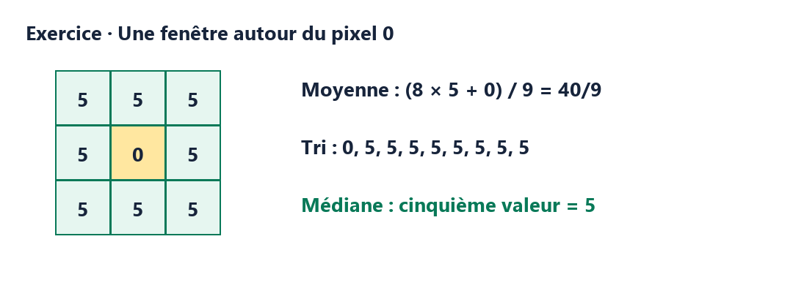

Comprendre le cours
1. Du pixel à la matrice
Une image numérique représente une scène par une grille d’échantillons appelés pixels. L’échantillonnage décide à quels endroits on mesure la scène. La quantification remplace chaque mesure par l’un des niveaux autorisés. Une image en niveaux de gris sur 8 bits a 256 intensités, de 0 à 255. Une image RGB associe trois composantes rouge, verte et bleue à chaque pixel.
Quand tu lis une matrice, identifie ligne et colonne avant toute opération. À résolution réduite, un petit détail spatial peut disparaître. À nombre de niveaux réduit, un dégradé peut se transformer en bandes. Ce sont deux effets distincts.
2. Lire et modifier un histogramme
L’histogramme associe à chaque intensité le nombre de pixels qui la possèdent. Il indique si une image utilise une plage étroite ou large et si elle contient surtout des tons sombres ou clairs. Deux images dont les pixels sont simplement permutés ont le même histogramme.
Pour étirer les niveaux entre un minimum a et un maximum b vers 0…M−1, calcule (v−a) × (M−1)/(b−a) et applique la règle d’arrondi choisie. Vérifie les deux extrêmes. Une image constante a b=a. Il faut alors décider explicitement de conserver la valeur ou d’adopter un niveau de sortie convenu.
Pour égaliser, calcule l’histogramme cumulé. Celui-ci donne le nombre de pixels dont le niveau est inférieur ou égal à la valeur examinée. On applique une transformation croissante issue du rang cumulé, par exemple arrondi((M−1) × H(v)/N) avec N pixels. Des pixels de même valeur restent liés et l’arrondi crée des regroupements. L’histogramme final peut donc rester irrégulier.
3. Traiter le voisinage
La distance de Manhattan additionne les déplacements horizontaux et verticaux. La distance euclidienne mesure le trajet à vol d’oiseau. La distance de l’échiquier retient le plus grand des deux déplacements. Au rayon 1, les deux premières donnent une croix et la troisième inclut aussi les diagonales. Dis si tu comptes le centre.
Un filtre moyenneur 3×3 remplace le pixel central par la somme des 9 valeurs divisée par 9. Un filtre gaussien donne plus de poids au centre. Une convolution emploie un masque qu’on retourne lorsqu’il est asymétrique. Si le masque est symétrique, cette étape ne change rien. Aux bords, choisis une convention, par exemple traiter uniquement les fenêtres complètes ou prolonger l’image.
Le filtre médian trie les valeurs de la fenêtre et choisit celle du milieu. Un point aberrant isolé perturbe fortement une moyenne et peut laisser la médiane inchangée. Quand tu calcules une nouvelle image, lis toutes les fenêtres dans l’image d’origine.
4. Faire ressortir un contour
Un contour apparaît lorsque l’intensité change rapidement. Les masques de gradient tels que Sobel approximent la variation selon deux axes. Calcule Gx et Gy sur la même fenêtre. La norme √(Gx²+Gy²) mesure la force locale de la transition. La direction du gradient pointe vers la variation maximale, perpendiculairement au contour idéal.
Un lissage peut limiter les faux contours dus au bruit. Une méthode à deux seuils peut conserver les vrais contours faibles à condition qu’ils soient connectés à des points forts. Garde la convention sur les signes des masques et le traitement des bords quand tu compares deux calculs.
5. Modifier des formes avec la morphologie
Une image binaire sépare le premier plan du fond. Un élément structurant est la petite forme qu’on déplace sur cette image. Pour l’érosion, une position est retenue si tout le motif translaté tient dans le premier plan. Pour la dilatation, la position est retenue si le motif réfléchi touche le premier plan. Avec un motif symétrique, la réflexion donne la même forme.
Une ouverture applique une érosion suivie d’une dilatation. Elle peut éliminer des détails plus fins que le motif. Une fermeture applique les opérations dans l’autre ordre et peut combler des petits trous. Avec des niveaux de gris et un élément structurant plat, l’érosion prend un minimum local et la dilatation prend un maximum local dans leur voisinage respectif.
Du cours aux TD et TP
Les exercices à refaire sont intégrés aux trois supports. Les corrections indiquent la convention de calcul utilisée, en particulier aux bords de l’image.
Questions TD & TP
Support Histogrammes · Étendre les niveaux d’une image 4 bits
Énoncé. Le support donne une image de 25 pixels sur 4 bits. Calculer l’histogramme puis le résultat de l’étirement.
4 4 9 10 10
7 4 7 9 10
7 7 4 7 9
10 8 4 6 6
10 7 6 6 6- Compte les niveaux
4, 6, 7, 8, 9, 10. Ils apparaissent5, 5, 6, 1, 3, 5fois. La somme vaut 25. - Étends de
[4,10]à[0,15]. Multiplie l’écart à 4 par15/6. Les nouveaux niveaux avant arrondi sont0, 5, 7,5, 10, 12,5, 15. Avec arrondi des demis au supérieur, ils deviennent0, 5, 8, 10, 13, 15. Chaque groupe garde son effectif. - Pour préparer une égalisation, cumule les effectifs
5, 10, 16, 17, 20, 25. Vérifie que la dernière valeur est le nombre de pixels avant de convertir les rangs sur l’échelle de sortie.
Support Filtrage · Appliquer le moyenneur et le médian 3×3
Énoncé. Appliquer les deux filtres à la grille du support, puis comparer les résultats. On calcule les 9 positions intérieures où la fenêtre est complète.
5 5 5 10 10
5 0 5 10 10
5 5 5 10 10
2 2 5 15 5
2 2 2 2 5
- Sur le pixel 0, les huit voisins valent 5. La moyenne vaut
40/9. Une fois les valeurs triées, la cinquième vaut 5. - En déplaçant la fenêtre, les sommes du moyenneur sont
[40,55,75] ; [34,57,75] ; [30,48,59]. Divise chaque terme par 9. La grille médiane vaut[5,5,10] ; [5,5,10] ; [2,5,5]. - Observe le dernier pixel intérieur. Sa fenêtre contient le 15, mais la médiane vaut 5. La moyenne utilise le poids de chacune des valeurs, tandis que le rang central est plus robuste à la valeur isolée.
Support Morphologie · Refaire l’érosion et la dilatation
Énoncé. Sur la grille binaire du support, éroder puis, séparément, dilater à l’aide de l’élément structurant dessiné au-dessus de chaque grille.
- Repère d’abord le point d’ancrage indiqué par X. Pour éroder, aligne-le sur la cellule que tu veux calculer. Marque 1 si toutes les cases du motif tombent sur le premier plan.
- Repars de la grille initiale pour la dilatation. Réfléchis le motif autour de son ancrage quand il est asymétrique. Une seule intersection avec le premier plan suffit pour marquer 1.
- Pour contrôler le raisonnement sur une ligne simple, prends
001110100et un motif horizontal symétrique de trois cases, avec du fond hors de la ligne. L’érosion donne000100000, la dilatation011111110. L’ouverture donne001110000et retire le pixel isolé.